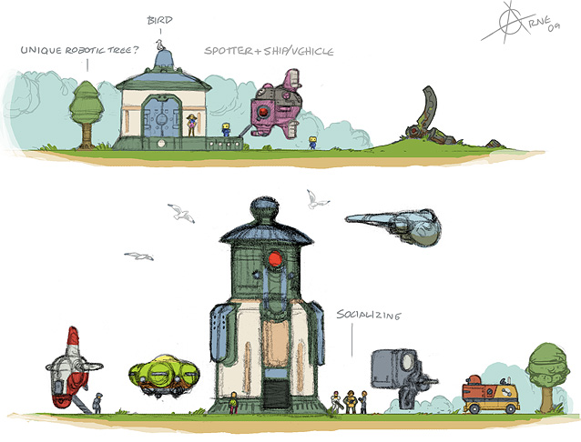

Jared Housh and Clark Trimble
The University of Tulsa
Box
Shibboleth
Directory
Grouper
Identity Vault
ERP
Authentication: the usual Shibb metadata exchange
Authorization: assign privileges to groups, please
//attribute-filter.xml
<afp:AttributeFilterPolicy id="box">
<afp:PolicyRequirementRule xsi:type="basic:AttributeRequesterString"
value="box.net" />
<afp:AttributeRule attributeID="ldgroup">
<afp:PermitValueRule xsi:type="basic:ANY" />
<afp:AttributeRule>
<afp:AttributeFilterPolicy>
//attribute-resolver.xml
<resolver:AttributeDefinition xsi:type="ad:Script" id="ldgroup">
<resolver:Dependency ref="myLDAP" />
<resolver:AttributeEncoder xsi:type="enc:SAML1String"
name="urn:mace:dir:attribute-def:group" />
<resolver:AttributeEncoder xsi:type="enc:SAML2String"
name="urn:oid:0.9.2342.19200300.100.1.4" friendlyName="group" />
<ad:Script><CDATA[ js-is-good-for-you! ]]><ad:Script>
<resolver:AttributeDefinition>
// js-is-good-for-you!
importPackage(Packages.edu.internet2.middleware.shibboleth.common.attribute.provider);
importPackage(Packages.org.slf4j);
logger = LoggerFactory.getLogger("ldgroup lookup");
ldgroup = new BasicAttribute("ldgroup");
if (typeof memberOf != "undefined" && memberOf != null ) {
for ( i = 0; memberOf != null && i < memberOf.getValues().size(); i++ ) {
dn = memberOf.getValues().get(i);
if ( dn.match(/,ou=groupergroups,o=utulsa.edu$/) ) {
parts = dn.split(",").slice(0,-2);
for ( j=0; j < parts.length; j++ ) {
parts[j] = parts[j].split("=")[1];
}
path = parts.reverse().join(":");
ldgroup.getValues().add(path);
}
}
}
logger.info("LDGROUP: "+ldgroup.getValues());
| OpenLdap | AD | |
| Person | ||
| Group |
class Entry
def self.set_particulars(particulars)
def self.auth(dn,pw)
def self.connect(dn,pw)
def self.dir
def dir
def self.find(dn)
def self.search(base,filter)
def operation(attr,value=nil)
def set(struct)
module LdapConfig
module AdConfig
class LdapEntry < Entry
include LdapConfig
def self.encode(pw)
class AdEntry < Entry
include AdConfig
def self.encode(pw)
def operation(attr,value=nil)
module Person
module ClassMethods
def find(id)
def search(filter,attrs=nil)
def uid_to_dn(uid)
def create(uid,did,first,last)
class PersonLdapEntry < LdapEntry
include Person
def self.generate_uid_number
def add_mail_attributes
def generate_primary_mail
def self.lookup(id)
class PersonAdEntry < AdEntry
include Person
module Group
module ClassMethods
def path_to_dn(path)
def dn_to_path(dn)
class GroupLdapEntry < LdapEntry
include Group
def self.groups
class GroupAdEntry < AdEntry
include Group
def initialize(keyvals={})
def flatten_ranged_attribute(attribute)
def self.membership(dn)
Flexible w/o duplicate code :)
*not synchronized to directory
select tuid as SUBJECT_ID
from namevalue
where name = 'employment_status_code'
and value = 'R'
Classic use case: CIO not in IT!
For example:
composite:law-faculty = employee:organization:law ∩ employee:faculty
employee:law-faculty = composite:law-faculty ∪ additional members
// a work in progress !!
def create_group(path)
name = path.split(':').last
req = Net::HTTP::Post.new "/grouper-ws/servicesRest/v2.0.1/groups"
req.body = { "WsRestGroupSaveRequest" => {
"wsGroupToSaves" => [ {
"wsGroup" => {
"name" => path,
"extension" => name,
"detail" => { "typeNames" => ["utulsaGroup"] },
},
"wsGroupLookup" => { "groupName" => path }
} ]
}}.to_json
req.add_field 'Content-type', 'text/x-json'
req.basic_auth @username, @password
r = JSON.parse(@http.request(req).body)['WsGroupSaveResults']
unless r['resultMetadata']['resultCode'] == 'SUCCESS'
raise "cannot create group:::#{r}"
end
end
To use event-driven change notification:
# grouper-loader.properties
changeLog.consumer.httpTestGroup.class = edu.internet2.middleware.grouper.changeLog.esb.consumer.EsbConsumer
changeLog.consumer.httpTestGroup.publisher.class = edu.internet2.middleware.grouper.changeLog.esb.consumer.EsbHttpPublisher
changeLog.consumer.httpTestGroup.publisher.url = http://server.utulsa.edu:4499/
changeLog.consumer.httpTestGroup.quartzCron = 48 * * * * ?
Posts JSON to the listening server
create view subject as select b.tuid as id,
(select a.value from namevalue as a
where a.name='first' and a.tuid=b.tuid) as first,
(select a.value from namevalue as a
where a.name='last' and a.tuid=b.tuid) as last,
(select a.value from namevalue as a
where a.name='uid' and a.tuid=b.tuid) as uid,
(select a.value from namevalue as a
where a.name='displayname' and a.tuid=b.tuid) as displayname,
(select lower(a.value) from namevalue as a
where a.name='displayname' and a.tuid=b.tuid) as lowername
from
(select distinct tuid from namevalue) as b ;
Lookup within Grouper is stubbornly slow. :(
Run queries against data warehouse:
queries = [
{ mapper: [
{ name:'tuid', value:'HRPER_ID' },
{ name:'office_building', value:'BUILDING_DESC' },
{ name:'office_room', value:'HRP_PRI_CAMPUS_OFFICE' },
{ name:'office_extension', value:'HRP_PRI_CAMPUS_EXTENSION' },
],
tables: ['dbo.ODS_HRPER'],
where:"where HRP_EFFECT_TERM_DATE > GETDATE()" },
...
Questions?
Comments?
jared-housh@utulsa.edu
patrick-trimble@utulsa.edu